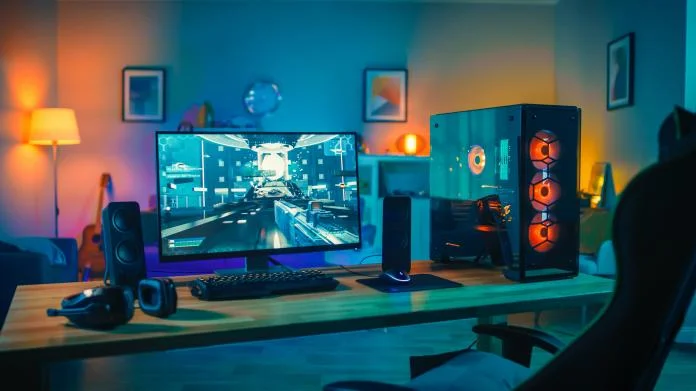

Mijn hobby's en interesses
Formule 1 is een van mijn grootste passies en een sport die mij fascineert. Het is geweldig om te zien hoe deze coureurs op het scherpst van de snede strijden om de overwinning, terwijl ze met meer dan 300 km/u over het circuit razen. De technologie en aerodynamica achter de auto's is ook indrukwekkend en de races zijn een geweldige combinatie van snelheid, spanning en strategie. Het is een sport die mij echt in zijn greep houdt en waar ik graag mijn vrije tijd aan besteed door naar races te kijken en meer te leren over de coureurs en hun teams.

Naast formule 1 heb ik nog een andere passie het bouwen en configureren van computers is een fascinerende hobby waar ik veel plezier aan beleef. Het is een geweldige manier om meer te leren over de werking van computers en om mijn eigen op maat gemaakte systemen te creëren die perfect aansluiten op mijn behoeften en wensen. Het bouwproces zelf is een uitdaging die mijn technische vaardigheden en creativiteit aanspreekt, terwijl het configureren van het systeem me de kans geeft om te experimenteren met verschillende instellingen en programma's om de best mogelijke prestaties te bereiken. Het is een hobby waar ik veel tijd aan besteed en die me blijft uitdagen en inspireren.

Reizen en het ontdekken van nieuwe landen is een van mijn grootste interesses en ik vind het geweldig om nieuwe culturen en tradities te leren kennen. Ik heb al verschillende landen bezocht, waaronder Duitsland, Frankrijk, Italië en vele andere, en elke reis is een nieuwe kans om te leren en te groeien. Ik vind het fantastisch om te zien hoe mensen over de hele wereld leven en om te ontdekken wat hen inspireert en drijft.
Elke reis die ik maak is een avontuur op zich en ik geniet van elk moment, van de voorbereidingen tot het moment dat ik weer thuis kom. Ik ben altijd op zoek naar nieuwe bestemmingen en ervaringen die me zullen uitdagen en verrassen. Of ik nu een nieuwe stad verken, wandel in de bergen of ontspan op het strand, reizen brengt me altijd nieuwe inzichten en herinneringen die ik koester voor de rest van mijn leven.
| Land |
Hoofdstad |
Favoriete gerecht |
| Frankrijk |
Parijs |
Quiche Lorraine |
| Spanje |
Madrid |
Paella |
| Italië |
Rome |
Pizza Margherita |
| Duitsland |
Berlijn |
Curry worst |

Schaken is een van mijn favoriete bezigheden en het is een spel dat me blijft uitdagen en inspireren. Het is een denksport die niet alleen strategisch inzicht vereist, maar ook creativiteit en concentratie. Het is fascinerend om te zien hoe elke zet gevolgen heeft voor het spelverloop en hoe elke partij anders is dan de vorige.
Ik vind schaken geweldig omdat het me de kans geeft om mijn geest te trainen en mijn denkvermogen te verbeteren. Het is een spel waar ik veel van kan leren en waarin ik mezelf kan blijven uitdagen om beter te worden. Ik vind het leuk om te spelen tegen mijn klasgenoot , maar ook om online te spelen en nieuwe uitdagingen aan te gaan. Schaken is een tijdloze activiteit die me veel voldoening geeft en me altijd blijft boeien.
Zie hier de portfolio van mijn klasgenoot waar ik veel tegen schaak Prooststijn.com